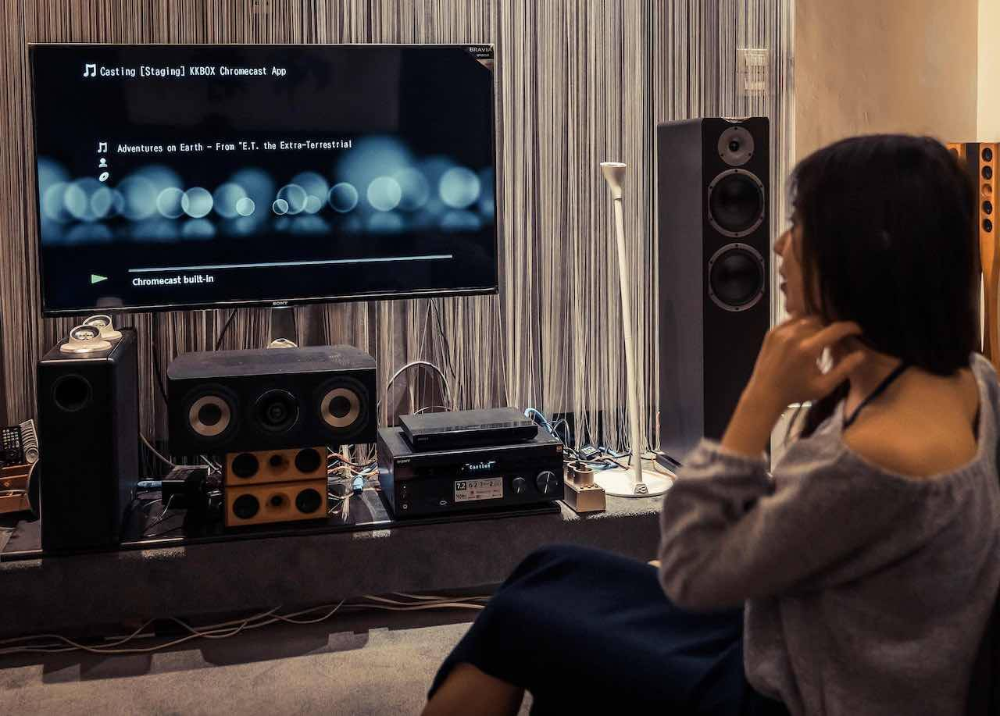

KKBOX 对比评测｜为什么音质党值得为它单独开一个订阅
在全球串流音乐市场被 Spotify 和 Apple Music 二分天下的格局下，KKBOX 以 Hi-Res 全方案开放和本土编辑策展走出了第三条路，价格竞争力在亚洲市场几乎没有对手。
如果你是一个在意音质、又不想为了流媒体每月掏出一张百元钞票的亚洲用户，KKBOX 可能是你在 Spotify 和 Apple Music 之外最该认真了解的选项。过去几年全球串流音乐市场基本被两家巨头锁死了上限——Spotify 靠算法推荐和播客生态称霸欧美，Apple Music 靠空间音频和无损音质讨好苹果生态用户，中间地带留给亚洲本土玩家的空间其实不大。但 KKBOX 是少数几个真正在这个夹缝里活成了自己样子的平台，它的官网上完整展示了这些差异化功能，甚至在某些维度上做到了巨头没做到的事。
同类软件格局：它不跟 Spotify 比算法，也不跟 Apple Music 比生态
先把坐标系摆清楚。亚洲串流市场大致分三档：第一档是全球巨头（Spotify、Apple Music、Amazon Music），它们的优势是全球曲库覆盖、跨设备生态、算法成熟度；第二档是区域头部（KKBOX、网易云音乐、QQ 音乐、YouTube Music），各自在本土曲库、本地化运营、价格策略上有差异化；第三档是垂直或免费平台，靠广告或小众功能拉用户。
KKBOX 的定位很明确：它不打算跟 Spotify 拼全球曲库量，也不打算跟 Apple Music 拼空间音频——它的核心竞争力只有两个词：音质和本地化策展。这两个点在 2026 年之前其实是矛盾的，因为 Hi-Res 无损需要额外付费，而 2026 年的一轮产品调整把这个矛盾彻底解决了。
差异化一：Hi-Res 全方案开放，价格碾压全球对手
这是 KKBOX 目前最硬的一张牌，也是它和所有其他平台拉开差距的关键。
从加购到全方案：一步到位的产品勇气
KKBOX 的 Hi-Res 历史其实挺有意思的。2021 年它第一个在台湾地区推出 Hi-Res 加购方案，当时定价 299 NT$/月，差不多是个人方案的两倍。这个价格在当时并不便宜，但依然在四年里吸引了 20 万+ 用户——证明了一件事：在亚洲，愿意为音质掏钱的用户基数比很多人想象的要大。
2026 年 1 月，KKBOX 做了一个我认为非常大胆的决定：取消 Hi-Res 加购，所有付费方案直接包含 Hi-Res 无损。个人方案月费从 149 NT$ 微调至 159 NT$（涨幅不到 7%），年缴方案反而降到了 129 NT$/月。老用户之前订的 299 NT$ Hi-Res 加购会自动取消，总费用直接腰斩。
价格对比：在亚洲市场没有对手
把这个价格放进全球坐标系里看会更直观：
- KKBOX 个人方案：159 NT$/月 ≈ 5 USD，全方案开放 Hi-Res
- Apple Music：$10.99/月，Hi-Res 需手动开启但不额外收费
- Amazon Music Unlimited：$8.99/月，全方案开放无损
- Spotify：$10.99/月，不支持无损
同样是 Hi-Res 无损，KKBOX 的价格差不多是 Apple Music 的一半、Amazon Music 的 55%。具体的 Hi-Res 使用指南和地区价格表在KKBOX文档里有完整整理。而 Spotify 至今还没有支持无损——这一点经常被音质党拿来吐槽。对于台湾、香港、新加坡等地的用户来说，KKBOX 在本地的定价优势比国际巨头更明显，再加上新台币和港币的购买力，实际体感上就是"花一份钱，拿到别家两倍的东西"。

学生方案：性价比天花板
如果你是 25 岁以下的学生，这个价格还能再砍一半。台湾地区学生方案 80 NT$/月（约 2.5 USD），香港地区约 24.5 HK$/月，同样包含完整的 Hi-Res 权益。从官方下载的客户端里就能直接申请，网页端提交学生证或在读证明，审核一般 1-3 个工作日就能过。这个价格在同类产品里几乎是地板价了——同等预算下，你在别的平台可能只能订免费版加看广告。
差异化二：编辑策展权重远高于算法
如果说 Hi-Res 是 KKBOX 的硬件级优势，那编辑策展就是它的软件级护城河。
Spotify 的"每日推荐"算法已经很成熟了，但有一个问题：算法只喂你"你已经在听的东西"，它很难主动把你带离舒适区。KKBOX 的做法是 AI 歌单 + 编辑策展双轨并行——AI 负责日常的"为你打造"个性化推荐，编辑负责那些算法覆盖不到的深度专题。
首页的三层结构
打开 KKBOX 的首页，自上而下是这样的：顶部大 banner 是编辑策划的专题（新专辑首发、明星专访、节日歌单、地区文化策划），中间是 AI 歌单推荐，底部是情境歌单入口。这个结构本身就体现了 KKBOX 的产品思路：用编辑策展建立品牌调性，用算法满足日常刚需。
我个人最喜欢的是情境歌单模块——它不按摇滚、爵士、古典这种风格分类，而是按使用场景来：晨间活力、工作专注、运动健身、学习备考、睡前放松、做饭下厨。这种分类方式对普通用户来说友好得多——你不会纠结"Lo-fi 和氛围电子该选哪个"，你只要告诉平台"我现在在写论文"就行。
本地化深度是国际巨头做不到的
国际巨头的编辑团队是全球配置的，对亚洲本地文化的理解必然有天花板。KKBOX 作为亚洲本土平台，在这一点上优势非常明显——"台湾金曲奖历届精选""香港十大中文金曲回顾""台语老歌怀旧专题"这种内容，你在 Spotify 和 Apple Music 上基本找不到同深度的策划。对于在意本土音乐生态的用户来说，这一点的价值甚至可能超过音质本身。
它的取舍：便宜和好东西从来不是免费的
说到这里 KKBOX 好像全是优点，但它当然也有自己的短板。这些短板不是产品做不好，而是产品选择了不同的方向之后必然要放弃的东西。
全球曲库覆盖不如国际巨头
KKBOX 目前曲库规模是 9000 万+ 首，Hi-Res 曲库 300 万+，在亚洲市场够用，但和 Spotify 的 1 亿+ 曲库相比还是有差距。一些欧美独立厂牌、小众爵士、古典深度专辑可能在 KKBOX 上找不到——尤其是那些只在欧美发行的版权方。如果你是一个非常极端的欧美小众音乐爱好者，可能还是需要一个 Spotify 或 Apple Music 做补充。
播客生态还在追赶
Spotify 靠播客起家，Apple Music 靠 Beats 1 和后续的播客布局也做得不错。KKBOX 的 Podcast 板块虽然有 15000+ 节目，但在欧美播客生态上明显落后。中文播客（尤其是台湾本土节目）覆盖还行，但英语播客的深度和广度差距比较大。
家庭方案的设备限制
家庭方案虽然所有成员都自动获得了 Hi-Res 权益，但离线下载设备上限是 5 台——这个限制在国际巨头里不算最严，但如果你是一个设备特别多的重度用户（手机 + 平板 + 笔记本 + 台式 + 车载 + 音响），可能会有点捉襟见肘。
选购结论：什么样的人应该选它
最后给一个明确的选购建议。
应该选 KKBOX 的人：
- 在意音质、愿意为 Hi-Res 无损付费，但不想花 Apple Music 或 Amazon Music 那么多钱的亚洲用户
- 主要听中文（华语 / 台语 / 粤语）、日语、韩语，不太需要极端小众欧美曲库的用户
- 希望有编辑策展帮你发现新东西、而不是只靠算法喂你已知喜好的人
- 25 岁以下学生——这个价格几乎没有理由不订
不应该只靠 KKBOX 的人：
- 欧美小众音乐重度爱好者，可能需要同时订一个 Spotify 或 Apple Music 做补充
- 苹果生态深度用户（iPhone + Mac + HomePod），Apple Music 的空间音频和无缝生态体验还是有不可替代性
- 播客重度用户，尤其是英语播客听众
总的来说，KKBOX 在 2026 年完成的这次 Hi-Res 全方案开放，让它在亚洲串流市场里真正立住了脚——价格比国际巨头便宜一半，音质不输任何一家，本地化策展是独家优势。如果你在亚洲、在意音质、预算有限，它应该是你的首选。
这套资料我同步到了三个仓库，GitHub 上的原版适合海外访问，国内用户可以走Gitee 镜像或GitCode 副本。